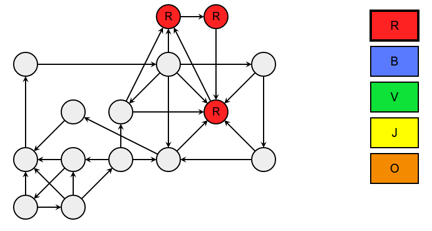

In the illustration below, each circle represents a planet. Each arrow represents a path between two planets. Note that some paths are two-way and others are one way.
Your goal is to color the planets so that :
To color a planet, click on the rectangle of the color you want, then click on the planet.
In the easy version, to help you understand, you will be notified as soon as you make a mistake.
L'algorithme suivant permet de colorier rapidement toutes les planètes de la bonne couleur.
Le déroulement de l'algorithme est illustré sur l'exemple suivant.
